Inhalt Index DeskTop Bronstein

 Computeralgebrasysteme Mathematica Zahlenarten in Mathematica
Computeralgebrasysteme Mathematica Zahlenarten in Mathematica


Zahlen sind in verschiedenen Formen darstellbar, die sich ineinander konvertieren lassen. So läßt sich jede reelle Zahl x mit 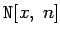 in eine Gleitpunktzahl mit n-stelliger Präzision konvertieren.
| 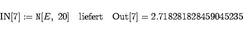 | (20.8a) |
Mit 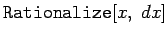 kann die Zahl x mit der Genauigkeit dx in eine rationale Zahl gewandelt werden. So ergibt
| 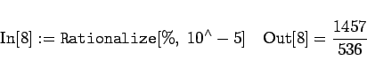 | (20.8b) |
Mit der Genauigkeit 0 übermittelt Mathematica die bestmögliche Näherung der Zahl x durch eine rationale Zahl.
Zahlen verschiedener Zahlensysteme können ineinander konvertiert werden. Mit 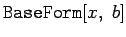 wird die Zahl x im Dezimalsystem in die entsprechende Zahl im System mit der Basis b umgewandelt. Ist 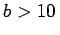, so werden für die Darstellung der weiteren Ziffern wie üblich die fortlaufenden Buchstaben 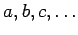 benutzt.
| Beispiel A |
|
So wird z.B. |
| 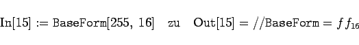 | (20.9a) |
oder
| 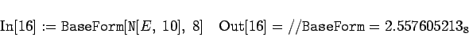 | (20.9b) |
Die Konversion einer Zahl zur Basis b ins Dezimalsystem wird mit 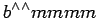 durchgeführt.
| Beispiel B |
|
In diesem Sinne liefert |
| 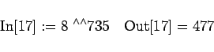 | (20.9c) |
Die Darstellung der Zahlen erfolgt mit der jeweiligen Präzision (voreingestellt hierfür ist die Maschinenpräzision) und bei großen Zahlen in der sogenannten wissenschaftlichen Schreibweise, d.h. in der Form 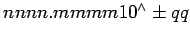.